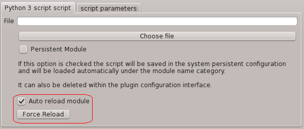

Documentation
Repository
This project is maintained by Gabriel Caudrelier
The two Python plugins need respectively the Python 2.7 and Python 3.x libraries to be installed, if the plugin cannot found them, it will fail to load.
The Python 3 plugin is now using Python 3.3, although it works fine with 3.2.
On Windows there is no real change to do, as the Python header is generic.
On Linux platform the plugin is just a question of changing the headers value from 3.3 to 3.2 in the Python plugin code.
The plugins looks for python files in the following locations
They will load every Python files found and register them into the transformation list based on their file name.
Additionally you can add your own files outside these directories, and make them "persistent" within Pip3line. See the transformation called "Python script 2.7/3" for this.
Both plugins load and initialize one and only one python interpreter, so there are two loaded in memory if both plugins are loaded properly.
The auto-reload feature will reinitialise the loaded module every time a transformation is applied, so in this case there can be no persistence in the module data
However if the auto-reload feature is disable the plugin module will be able to keep data accross transformation, but be aware that this applies to all instances of the same module.
It is relatively simple, as shown in the extras directory.
You just need to implement the function pip3line_transform somewhere:
#!/usr/bin/env python
#-*- coding: UTF-8 -*-
def pip3line_transform(inputData):
""" Take a bytearray as input and returns a bytearray"""
# if you need to convert to a Python 'string'
string = inputData.decode('utf-8')
# Some code ......
# just remember to convert it back to a bytearray
return bytearray(string, 'utf-8')If you want to implement a bi-directional transformation set the Pip3line_is_two_ways to true
Then check the Pip3line_INBOUND value
Use the gzip and bz2 examples as a starting point:
#!/usr/bin/env python3
#-*- coding: UTF-8 -*-
import gzip
Pip3line_is_two_ways = True
def pip3line_transform(inputData):
ret = None
if (Pip3line_INBOUND):
ret = bytearray(gzip.compress(inputData))
else:
ret = bytearray(gzip.decompress(inputData))
return retYou can also send parameters to the scripts via the gui setting tab which are accessible as a Python dictionary Pip3line_params
you can define default parameters names by filling the Pip3line_params_names string list
Pip3line_params_names = ["param1", "param2"]They are then accessible in the gui in the settings tab:
The transformation can then access the values via normal dictionary access
Pip3line_params["param1"]
Pip3line_params["param2"]